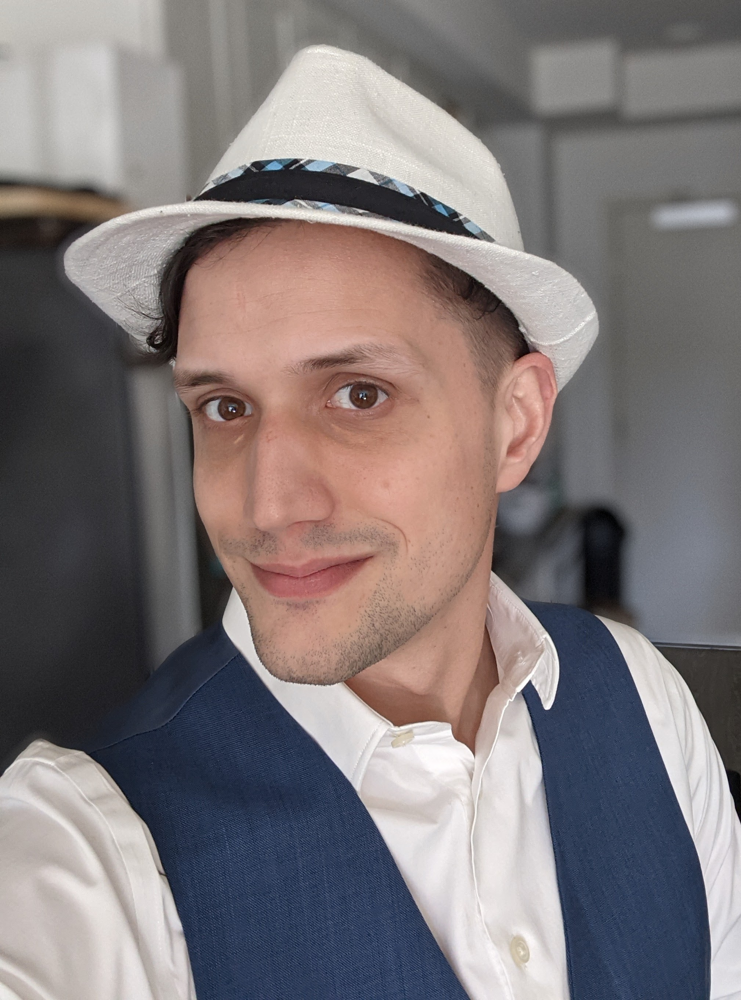
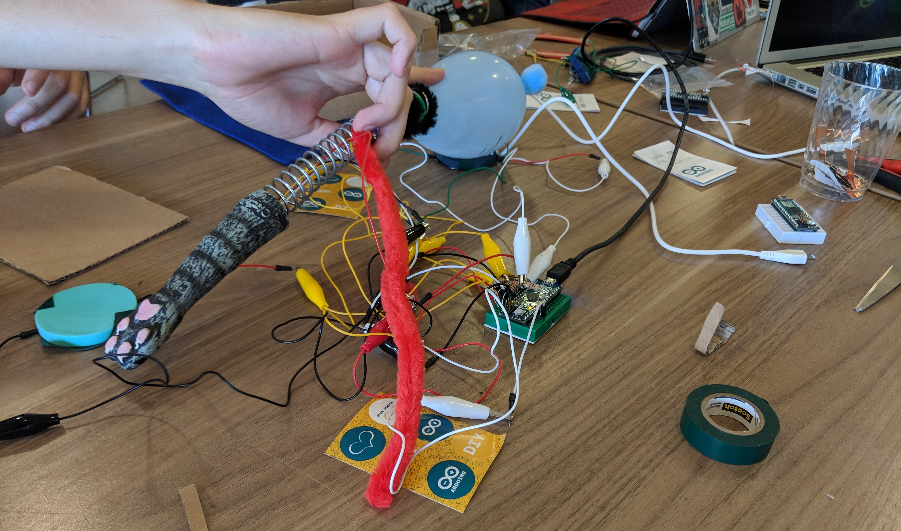
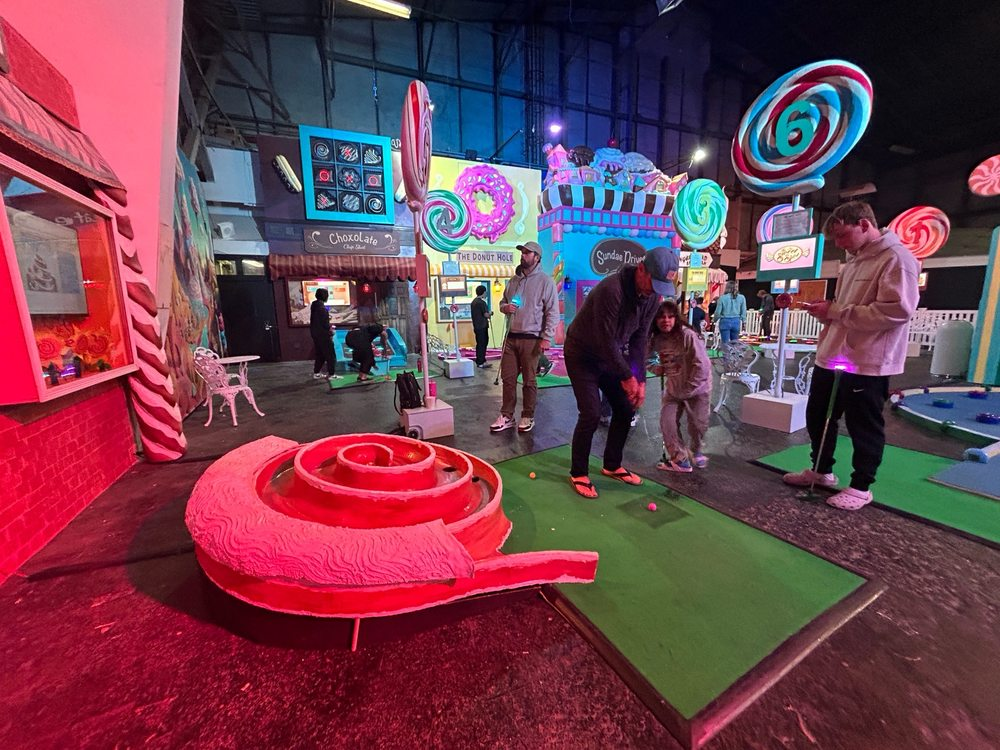
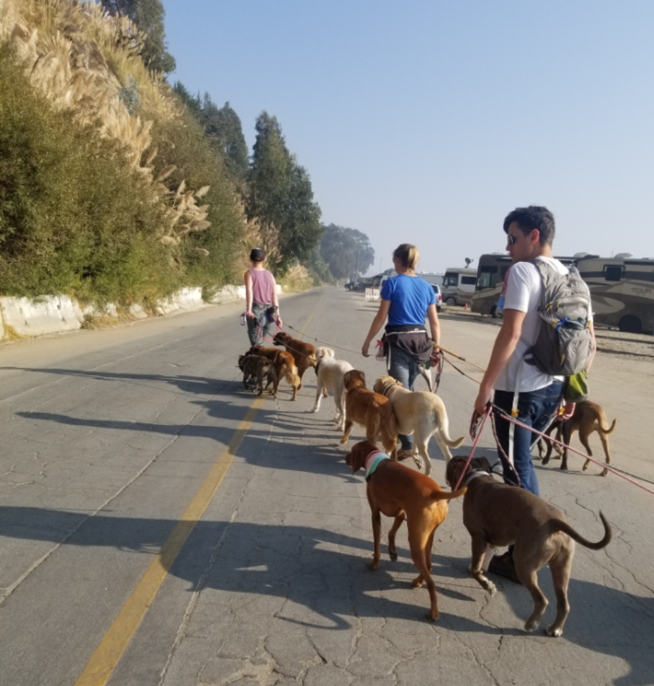
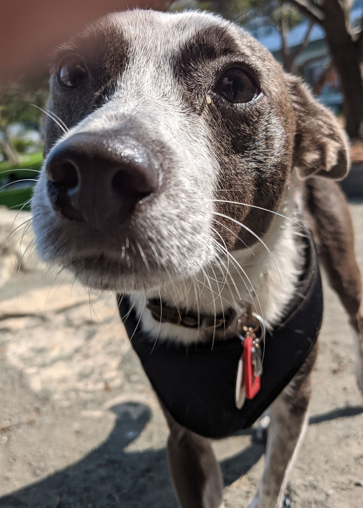

UX Researcher · Human-Computer Interaction · Physical Prototyping
I design and study tangible interfaces that collect behavioral data in the places people actually live. My work spans mixed-methods research — expert interviews, longitudinal field deployments, controlled lab studies — and the hardware those studies run on, from sensor selection and microcontroller firmware through enclosure design and deployable builds. I've partnered with machine learning teams to turn interaction logs into interpretable models, and carried a research platform through to commercial production. I'm currently looking for UX research roles where that full-stack view is useful.
Academic work at UC Santa Cruz 2009-2021

I got my start at UC Santa Cruz in 2009 working on my BS in Bioengineering with a focus on developing Assistive Technology to help disadvantaged communities and further universal access in technology. I started working with Dr. Sri Kurniawan and Dr. Mircea Teodorescu on developing a robot that would be able to help older people safely stay in their homes for longer by using camera vision and machine learning to do wellness checks and distanced heart rate analysis. This initial interest in research encouraged me to return to UCSC for graduate school in 2014.
I continued working with Professor Kurniawan interviewing physical therapist and stroke rehabilitation experts in an attempt to develop technology for rapid recovery of motor skills after stroke, but shifted my focus as the new department of Computational Media formed around me and an influx of new professors led me to collaborate with Dr. Katherine Isbister.
Her focus on Research through Design and tactile fidgeting objects helped form my next project. I worked with Makers, designers and explored smart material like e-textiles, sensors and microcontrollers to create deformable controllers for emotion detection and regulation in children (Worry Pet) and ADHD regulation (Fidget Ball). My work process is holistic from idea formation to execution to user testing and refinement. It always takes many iterations to reach the "end" product. All of my product stages involved an interdisciplinary team and I love to make new connections with enthusiastic developers.

As a less formal application of my experience and a way to explore new spaces I organized a workshop with the Games and Playable Media department on developing deformable controllers. Over an 8 hour period participants developed their own alternative controllers interfaces and games to play with them. Example shown to the right.

Throughout the life of my projects I worked as the programmer, hardware developer, project manager and user testing lead on the various projects I developed. As both of my research projects were research platforms for interaction data collection, they both created very data rich logs. I helped facilitate and document consistent procedures for data collection, annotated the logs with interview transcripts and helped initial interpretation so that the machine learning team was able to parse through the data for model training.

The Worry Pet research platform became Purrble, a commercial product named to Time Magazine's Best Inventions of 2021 and later featured on QVC. I worked with external collaborators through that transition, holding continuity on the design as it moved from the UCSC lab to Sproutel's production team. The Fidget Ball became the foundation of an NIH R21 grant studying attention attenuation, ongoing at UC Davis. I completed my Ph.D. in summer 2021.
The COVID lockdown was both productive in that I had plenty of time to round out my dissertation with fewer distractions, however it also meant that user studies came to a more abrupt end than anticipated. As the team came out of lockdown the NSF grant backed medical study was fulfilled by the UC Davis team and helped verify some of the preliminary findings that were reflected in my dissertation and the project is still in active refinement by Nahid Nasiri, Katherine Isbister and the Machine Learning and Medical Research teams. Further exploration was presented at CHI 2024 in the article "Extracting the Affective Content of Fidgeting in Adults with ADHD via Machine Learning and a Hand-held Soft Tangible Device" .
Post Doctoral Work

In 2023 I started working with Palace Games developing Lolliland, a pop-up immersive mini-golf experience, where I lead electronics integration for the physical set. I design and build the sensing and lighting systems embedded in interactive props and scenery, and specify the power architecture that keeps a public installation running through full operating days. The work is iterative in a way research rarely allows: thousands of guests pass through, failure modes surface within hours, and revisions ship the same week. It's been the most direct experience design feedback loop I've had. I'm currently prototyping for Lolliland 2.0 alongside my ongoing escape room work.

The Tee room, a companion space to Lolliland 1.0, has walls built from shoji screens, reinforced by plexiglass. Every panel lights independently — 17 panels in total, driven as individually addressable boxes of light running their own animations. Eight full-height panels carry 14 distinct light boxes each; the remaining nine pair 6 boxes below a television with 4 above it, so the screen and the lit panels read as one continuous surface, with the ability to change to "windows" looking out upon a Japanese tea garden filled with sakura blossoms or transported across the world to an adventure.
Escape Room Systems & Live Production at Palace Games
Alongside Lolliland I maintain and extend the puzzles in Palace Games' escape rooms, which are booked and played continuously. New mechanisms go from SolidWorks model to 3D print to installed prop, and software changes are tested and deployed to production while guests are in the building there is no maintenance window. That constraint shapes everything: changes have to be reversible, staged, and verified against a live room before the next booking.
The work is deliberately broad. On a given puzzle I might be breadboarding a sensor circuit, sewing eletronics into soft components, printing a replacement puzzle prop, and adjusting the control software that ties it together. I work alongside and coordinate the specialists the rooms depend on, our woodworking and metalworking craftsman, our lead artist, and our primary programmer, sequencing their work so that physical fabrication, visual design, and software land together rather than blocking each other.

My largest ongoing project is consolidating six separate game-master interfaces, accumulated piecemeal over a decade, into a single Godot-based application. Six interfaces meant six sets of habits to teach with duplicate functionality represented in various ways across the different interfaces. Consolidating them cuts game-master training time and removes years of divergent behavior between rooms. This meant working alongside the game managers to figure out what they actually use and what improvements could be added to help them know how a guest is doing in the room. To that end I added additional sensors, magnet locks, altered the input method of a few puzzles so that the system better understood what was happening and could report that to the GMs. At the same time I and the lead programmer worked in Godot to develop a simplified GUI; reconciling naming conventions across disciplines, so that the term the front and back of house use all have common terms they can reference for various points in the game.
Access is its own design problem. One of the areas in the Attraction has 14-foot trees with electronics embedded into the canopy, trunks and walls. As a way to better access the eletronics our craftsman and I drafted and built a walkable deck above the room letting us reach the hardware without dismantling the closing the room. The image is my hand drafted floor plan demarcating anchor points, access panels and existing dimention.
Dogs and Other Interests

Outside of research I love spending time with dogs and spent a lot of my spare time during grad school working with WoofPack831, a pack walking group that helps train dogs in well-mannered interactions with other dogs. This love of dogs led to an internship with Companion Labs in 2020 right at the beginning of the pandemic helping user testing and fund raise for their ML backed training device to help keep dogs entertained and trained while stuck at home.

That interest in making things light up follows me home. I model and print various projects, this one is a set of lithographs featuring my friend's dog, Cerbe. It's modular design allows them to be swapped around and new ones added over time while allowing for dynamic lighting patterns. Especially helpful to act as a night light for an aging puppydog.

I grew up moving internationally so I'm very much a third culture kid but the Bay Area has definitely felt like home for the last two decades, so when I finished my degree in 2021, I moved to San Francisco proper and adopted my new favorite doggo, Kirby, an aussie shepherd mix that joins me on adventures through the city! Outside of work I have a passion for musical theater, craft cocktails, gardening, board and video games, puzzle hunts and escape rooms.